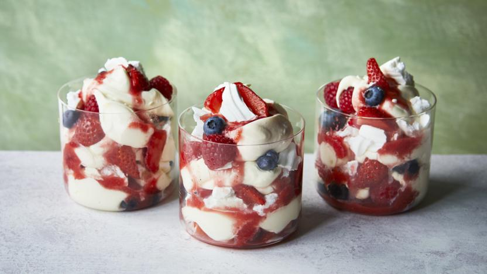

Eton Mess
by Odin Recipes

Description
Few desserts say summer like Eton mess. Crunchy meringue, whipped cream and strawberry sauce is a winning combination, best served al fresco.
Ingredients
- 2 large egg whites
- 120g caster sugar
- 500g strawberries, hulled and roughly chopped
- 450ml double cream
- 1 tbsp icing sugar
Method
- Heat oven to 120C/100C fan/gas 1 and line a large baking tray with parchment paper. Whisk the egg whites in a clean bowl using an electric whisk or tabletop mixer until they reach stiff peaks, then add the sugar in 3 lots, re-whisking to stiff peaks every time.
- Spoon dollops of the mixture onto the baking parchment, cook on the bottom shelf of the oven for 1hr – 1hr15 mins until the meringues are completely hard and come off the paper easily. Leave to cool.
- Blitz 1/3 of the strawberries to make a strawberry sauce. In a large bowl whisk the cream with the icing sugar until it just holds its shape. Roughly crush ¾ of the meringues and tip them in with the chopped strawberries and stir, then swirl through the strawberry sauce.
- Dollop into bowls then crush the remaining meringues, sprinkling the pieces over the top.